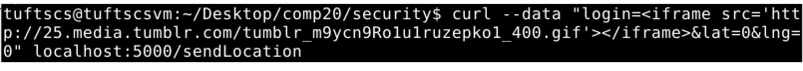

Security and Privacy Assessment of "Not Foursquare"
By: Lillianna Levonick
8/10/2016
This product is meant to hold users locations at a specific point in time. It does this by logging a person’s username, latitude, longitude, and time that they are checking-in into a database. I was hired to assess any potential vulnerability within this web application. This document describes my findings as well as ways to resolve the problems I have found.
First I downloaded the source code that was given to me and ran the web application locally. After that was done, I attempted some “black box” testing with the main webpage of the application. I did so by adding some queries into the search bar and by using the curl command in my terminal to try to add login and location information. When I did this with no results, I decided to move onto “white box” testing where I went over the source code. Once I read the source code I was able to better understand where I should try to attack the website and used curl as well as an HTML file I wrote in order to attack the application. Once I was done testing my attacks on the local app I configured, I then sent them over to the actual “Not Foursquare” application using the same methods.
Many of the problems I found stem from not protecting the application from user input. By trusting the user, the application is leaving itself wide open to attacks, making it recommendable to not release this application until some of its issues are fixed. Despite its issues, this application does protect against a few things well. For instance, it does not store additional fields of user information into the mongodb database. This saves storage space if someone decides to add random fields to a new check-in with a command like: curl –data “login=bob&lat=0&lng=0&extrafield=whatever” http://vunerableapp.herokuapp.com/sendLocation. Also, this application protects against any impossible latitude or longitude values that may get inserted as input into the application.
- Injection
- Issue found at vulnerableapp.herokuapp.com/checkLocation
- High: This issue allows an attacker to send untrusted data to the database by exploiting the syntax of checking-in on this application. This is an issue because it can allow someone to inject images, other html files, and much more into the login section of the check-in. Although corrupted data can later taken out of the mongodb database this problem can lead to issues like data loss and corruption, justifying its severity level. Also, this level is due to how this issue is easy to exploit and has a severe impact.
By using the command  I was able to embed a different html file within my local version of the application in the login field. This is what the main page of the application looks like while having this logged as one of the check-ins:

This check-in data can then be accessed in mongodb and removed if that is desired.
However, if the embedded file were a harmful website then it may already be too late when trying to fix this problem retroactively as users may have already witnessed the harmful content. Also, by using this command  I was able to embed an image into the local web application through the login field. The result of this on the main webpage can be seen here:
I was able to embed an image into the local web application through the login field. The result of this on the main webpage can be seen here:
This poses the same issues as the embedded html file and can be accessed and removed in mongodb in the same fashion.
- In order to resolve this issue, untrusted data must be separated from commands and queries. Whitelist input validation can be used where you can define exactly what is authorized, making everything else unauthorized. This way special characters can’t be used in the input.
- Cross-Site Scripting (XSS)
- Issue found at vulnerableapp.herokuapp.com/checkLocation
- High:
- Unvalidated Redirects and Forwards
- Issue found at vulnerableapp.herokuapp.com/checkLocation
- High:
- Sensitive Data Exposure
- Issue found at vulnerableapp.herokuapp.com/checkins.json as well as vulnerableapp.herokuapp.com
- Moderate: